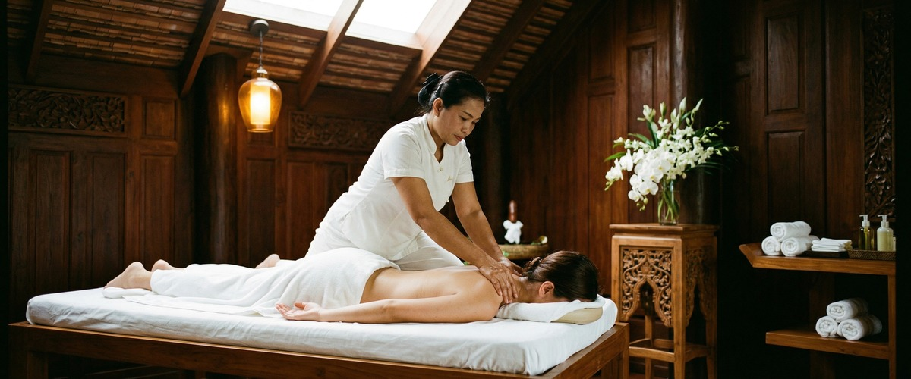
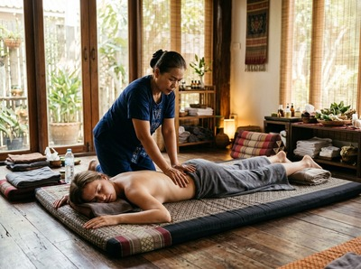
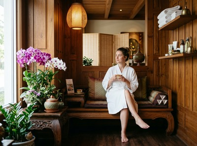

Most people in Glasgow have heard of Thai massage.

Far fewer have experienced what a genuinely skilled Thai massage therapist can do. There is a difference between a treatment that ticks a box and one that leaves you walking out feeling structurally different: looser in places that have been locked up for months, calmer in a way that outlasts the appointment. If you have been curious about booking with a Thai massage therapist in Glasgow but are not sure what to expect or where to start, this is for you.
Thai massage is not a variation on the standard Western massage format. It is an entirely different approach to working with the body. It is rooted in traditional techniques developed over centuries.

Swedish massage uses gliding strokes to relax surface muscle tissue. Thai massage works differently. It uses assisted stretching, acupressure along sen energy lines, and guided joint movement.
You stay fully clothed during a traditional session. There are no oils involved. A trained therapist uses their hands, thumbs, elbows, forearms, and feet to apply pressure and guide your body through stretches most people could not do alone.
The result is a treatment that improves flexibility, relieves deep muscle tension, and restores range of motion. It is hard to replicate through any other therapy.
At Serendipity Massage Therapy and Wellness, every therapist is trained to a consistent standard. The techniques were developed by head therapist Jariya Malone and are used across the whole team.
Glasgow's city centre is one of the busiest work environments in Scotland. Offices line St Vincent Street, Hope Street, and West George Street. Workers in law, finance, architecture, and creative agencies spend long hours at desks.
That tension builds quietly. Most people are not fully aware of it until it becomes persistent neck pain, shoulder stiffness, or lower back ache.
Thai massage addresses this directly. The assisted stretching decompresses the spine, opens the chest and shoulders, and releases hip flexors tight from hours of sitting. It is not pampering. It is physical maintenance.
Serendipity sits on Hope Street in the G2 postcode, close to the heart of Glasgow's professional district. For anyone working nearby, a lunchtime or after-work session is a practical option, not a luxury that needs planning around. Book your session today and fit it around your working week.
Not all therapists have the same training, and this matters more with Thai massage than most other treatments. The technique requires precise knowledge of body mechanics, pressure points, and stretching sequences.
An undertrained therapist can apply pressure that is uncomfortable without being useful. They may also miss the areas where tension is actually held.
When choosing a Thai massage therapist in Glasgow, look for:
Serendipity's therapists are trained to read what each client needs. You will be asked about your areas of concern before the treatment starts. The approach is then adapted to suit you.
Thai massage is not just for desk workers. Athletes and active people across Glasgow use it as part of their recovery and performance routines.
The assisted stretching improves range of motion in the hips, hamstrings, and shoulders. The acupressure work releases muscle knots that resist foam rolling or rest alone.
Whether you train at a city centre gym, run along the Clyde, or play team sport at weekends, regular Thai massage supports recovery. It also helps maintain the muscle balance that lowers injury risk over time. You can book your session online to fit it around your training schedule.
This depends on your situation. If you are dealing with a specific issue, such as chronic neck pain or a muscle imbalance from sport, regular sessions will produce better results than a single appointment.
Most clients with an active issue benefit from attending every one to two weeks until things settle. Monthly sessions then work well as ongoing maintenance.
For those using Thai massage mainly for stress and general wellbeing, monthly sessions are often enough to notice a real difference. In how their body feels, and how well they sleep.
The key is regularity. A single appointment brings relief. Consistent sessions over time produce lasting change.
If traditional Thai massage sounds too intense for a first visit, Thai oil massage offers a gentler starting point. It combines flowing strokes with targeted pressure using therapeutic oils. It covers the full body in a way that relaxes muscle tissue and improves circulation, without the intensity of assisted stretching.

Many clients alternate between the two. Traditional Thai massage when they want to work on flexibility and structural tension. Thai oil massage when they need a deeper reset after a demanding week. Both are available at Serendipity on Hope Street.
Glasgow has plenty of massage options. What makes the difference is not the style on the menu but the quality of the therapist and the consistency of the team. Serendipity Massage Therapy and Wellness is a professional team practice built around real therapeutic outcomes. If you are ready to experience what a skilled Thai massage therapist in Glasgow can actually do, book online now and find out for yourself.
Traditional Thai massage is done fully clothed, so you do not need to undress. Loose, comfortable clothing is ideal — something that allows your limbs to move freely during the stretching.
If you are booking a Thai oil massage instead, you will undress to your comfort level and be covered with towels throughout. Your therapist will explain what to expect before you begin.
Yes, and it is a good choice for first-timers who want real results rather than surface-level relaxation. At Serendipity in Glasgow, your therapist will ask about your health, areas of tension, and pressure preferences before the session begins.
The treatment is fully adapted to your comfort level. There is no fixed intensity you have to endure.
Swedish massage uses flowing strokes on bare skin with oil to relax muscle tissue and improve circulation. Thai massage is done fully clothed, uses no oil in its traditional form, and works through acupressure, joint movement, and assisted stretching along the body's sen lines.
Thai massage tends to be more active and works deeper into the body's structure. Swedish massage is typically more focused on relaxation. Both have real therapeutic value, and many clients book both depending on what they need.
Think about what you want from the session. If your main concern is muscle stiffness, reduced flexibility, or postural tension from desk work or sport, traditional Thai massage is usually the stronger choice.
If you want a deeply relaxing full-body treatment focused on stress relief, Thai oil massage or Swedish massage may suit you better. If you are still unsure, get in touch when you book and the team at Serendipity will help you choose.
Advance booking is recommended, particularly for evening and weekend appointments, which fill quickly. Serendipity is located at Central Chambers on Hope Street in Glasgow city centre. You can book online at any time.
Walk-ins may be possible when a therapist is available, but booking ahead guarantees your preferred time and therapist.